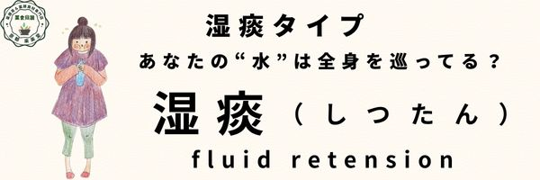
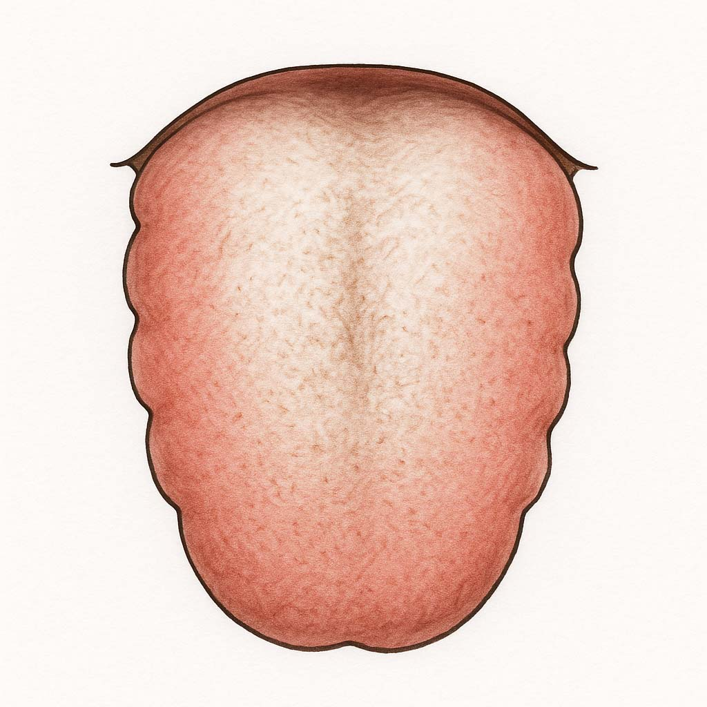

湿痰タイプ
体質 湿痰タイプ
あなたのからだはいま、水の巡りが悪くなってどこかに溜まっている「湿痰」体質です
水腫虚冷体質
体質の説明、主な特徴
色白で肥満・むくみ・冷え症タイプ。「水」の過剰・渋滞・停滞状態。全身に不調をもたらす不要な水を撃退しましょう。
肥満気味でまぶたがむくみやすい。大便は軟便。尿はすっきりでない。おりものが多い。
甘いもの、油っこいものを好み口中が甘く粘る。口は渇くが飲みたくない。手足のむくみ、めまい。
体質の説明、主な特徴
・色白で太りやすい。
・胃腸が弱く、食後に眠くなる。
・朝起きるのがつらく、だるい。
・お腹が張りやすく、軟便傾向。
・手足がむくみやすい。めまい。
・鼻炎、蓄膿症、花粉症、アトピー、喘息、肺水腫などに注意。
なりやすい不調・病態（からだとこころ）
アレルギー性鼻炎、慢性副鼻腔炎、気管支喘息、痰が多く切れにくい、咳、息切れ、だるさ、眠気、頭が重い、思考力低下。
水腫、メニエール、脂質異常、肥満、糖尿病、下痢、婦人科疾患、不妊症、多嚢胞性卵巣症候群。
舌の特徴（正常との比較）
正常な舌（画像）

湿痰の舌（画像）
他の体質との関連
「気虚」や「陽虚」と合併しやすい。脾の運化失調と関係。
養生ポイント
水を巡らせ、余分な痰湿をさばく。脾胃を強めて代謝促進。
未病先防…１
甘味・脂っこいもの・乳製品などを控える。
冷たい飲食・生もの・夜更かし・過労を避ける。
未病先防…２
空腹を感じてから食べる。
過食を避け、食後すぐ横にならない。
既病防変
有酸素運動や発汗を促す入浴で代謝UP。
寝起きに白湯で胃腸を温める。
気を巡らせる香味野菜も活用。
経絡/ヨガ/運動処方
脾経・肺経・腎経を意識した運動。
ストレッチ・足踏み・半身浴・湯たんぽで温める。
効果的なツボ＝陰陵泉・足三里・太白など
薬膳施治
健脾化湿（けんぴけしつ）・化痰利水（けたんりすい）
脾の働きを高めて水分代謝を良くし、痰湿を除く。
おすすめの食材
はと麦、陳皮、山薬（山芋）、生姜、大根、白ネギ、冬瓜、しそ、三つ葉、黒豆、小豆、きのこ類、海藻類、魚介類（えび、かに、あさり）など。
五気：温・平、五味：甘・辛、帰経：脾・胃・肺・腎
おすすめ商品（カテゴリーリンクで対応）
- 食べる薬膳茶（意棗紅豆茶）
- 枸杞とバラ 養眠茶
- 気血巡茶
- 崑崙雪菊茶
- 五望茶
- 茉莉花茶（ジャスミン茶）
- 理気明目茶
- 山査子（サンザシ）
- 松の実
- はと麦
- 緑豆
- 白きくらげ
- いろいろお豆のスィーツセット
- スッキリさっぱり乃湯
注意するもの
甘いもの、脂っこいもの、冷たい飲み物、生もの、チーズ、牛乳、アイス、スナック菓子など。
摂ると良い四気・五味・帰経食材
四気：温性・平性 五味：甘味・辛味 帰経：脾・肺・腎
国際中医師からのアドバイス
水分の代謝がうまくいかず、不要な水が体内に溜まると「痰湿（たんしつ）」になります。
このタイプは「冷え」と「脾の弱さ」が関係しており、運動不足や食べ過ぎ、甘いものの摂りすぎにも注意が必要です。
食生活の見直しと生活習慣の改善が、体質改善のカギです。